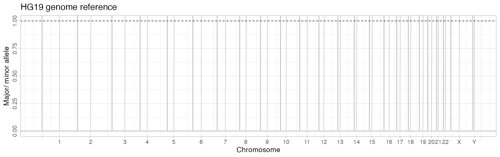

library(CNAqc)
#> ✓ Loading CNAqc, 'Copy Number Alteration quality check'. Support : <https://caravagn.github.io/CNAqc/>We discuss the input format and references used in CNAqc.
You need to provide data for somatic mutations, copy number segments and tumour purity. The package comes with a template dataset available.
These fields are required for mutation calls:
chr, from, to.ref and alt;DP (depth);NV (number of reads with variant);VAF, defined as NV/DP.Chromosome names and alleles should be in character format; chromosomes must be in the format chr1, chr2, etc..
# Example input SNVs
print(
example_dataset_CNAqc$snvs %>%
select(
chr, from, to, # Genomic coordinates
ref, alt, # Alleles (reference and alternative)
DP, NV, VAF # Read counts (depth, number of variant reads, tumour VAF)
)
)
#> # A tibble: 13,141 x 8
#> chr from to ref alt DP NV VAF
#> <chr> <dbl> <dbl> <chr> <chr> <dbl> <dbl> <dbl>
#> 1 chr1 1027104 1027105 T G 60 6 0.1
#> 2 chr1 2248588 2248589 A C 127 9 0.0709
#> 3 chr1 2461999 2462000 G A 156 65 0.417
#> 4 chr1 2727935 2727936 T C 180 90 0.5
#> 5 chr1 2763397 2763398 C T 183 61 0.333
#> 6 chr1 2768208 2768209 C T 203 130 0.640
#> 7 chr1 2935590 2935591 C T 228 132 0.579
#> 8 chr1 2980032 2980033 C T 196 85 0.434
#> 9 chr1 3387161 3387162 T G 124 6 0.0484
#> 10 chr1 3502517 3502518 G A 88 10 0.114
#> # … with 13,131 more rowsOptionally, you can annotate also driver mutations:
is_driver;driver_label reportin the label to show in the plots with drivers.print(
example_dataset_CNAqc$snvs %>%
select(
chr, from, to, ref, alt, is_driver, driver_label, everything()
)
)
#> # A tibble: 13,141 x 13
#> chr from to ref alt is_driver driver_label FILTER DP NV
#> <chr> <dbl> <dbl> <chr> <chr> <lgl> <chr> <chr> <dbl> <dbl>
#> 1 chr1 1.03e6 1.03e6 T G FALSE C1orf159(EN… PASS 60 6
#> 2 chr1 2.25e6 2.25e6 A C FALSE SKI(dist=70… PASS 127 9
#> 3 chr1 2.46e6 2.46e6 G A FALSE HES5 PASS 156 65
#> 4 chr1 2.73e6 2.73e6 T C FALSE RP11-740P5.2 PASS 180 90
#> 5 chr1 2.76e6 2.76e6 C T FALSE RP11-740P5.… PASS 183 61
#> 6 chr1 2.77e6 2.77e6 C T FALSE RP11-740P5.… PASS 203 130
#> 7 chr1 2.94e6 2.94e6 C T FALSE RP11-740P5.… PASS 228 132
#> 8 chr1 2.98e6 2.98e6 C T FALSE LINC00982 PASS 196 85
#> 9 chr1 3.39e6 3.39e6 T G FALSE ARHGEF16 PASS 124 6
#> 10 chr1 3.50e6 3.50e6 G A FALSE MEGF6 PASS 88 10
#> # … with 13,131 more rows, and 3 more variables: VAF <dbl>,
#> # ANNOVAR_FUNCTION <chr>, GENE <chr>These fields are required for copy number segments:
chr, from and to;Major and minor;In CNAqc format, a diploid balanced segment has Major = minor = 1 and will be shortly denoted as karyotype 1:1. Similarly, a tetraploid segment has Major = minor = 2 and karyotype 2:2. A fixed set of colours is used to identify the main karyotypes supported by CNAqc: "1:0", "2:0", "1:1", "2:1" and "2:2".
Optionally, you can annotate also annotate the Cancer Cell Fraction (CCF) CCF for each segment:
CCF = 1 are clonal, otherwise subclonal;CCF = 1. Some computations subset only clonal copy number segments (see the manual of each function).# Example input CNA
print(
example_dataset_CNAqc$cna %>%
select(
chr, from, to, # Genomic coordinates
Major, minor # Number of copies of major/ and minor allele (B-allele)
)
)
#> # A tibble: 267 x 5
#> chr from to Major minor
#> <chr> <int> <int> <dbl> <dbl>
#> 1 chr1 840009 1689987 3 2
#> 2 chr1 1689988 1815015 3 2
#> 3 chr1 1815016 9799969 3 2
#> 4 chr1 10479910 12079917 3 2
#> 5 chr1 12079917 12154980 3 2
#> 6 chr1 12154981 12839977 3 2
#> 7 chr1 13780016 17790026 3 2
#> 8 chr1 17849962 21080067 3 2
#> 9 chr1 21080068 21559998 3 2
#> 10 chr1 21559998 24830001 3 2
#> # … with 257 more rowsTumour purity, defined as the percentage of reads coming from tumour cells), which must be a value in \([0, 1]\).
Note In the current implementation no use of subclonal copy number segments is done. Most function compute statics only with clonal copy number segments.
To use CNAqc, you need to initialize a cnaqc S3 object with the initialisation function init.
This function will check input formats, and will map mutations to CNA segments. This call does not subset the data, unless there are errors with respect to the required formats. It is required to explicit the reference genome for the assembly (see below).
# Use SNVs, CNAs and tumour purity (hg19 reference, see below)
x = init(
example_dataset_CNAqc$snvs,
example_dataset_CNAqc$cna,
example_dataset_CNAqc$purity,
ref = 'hg19'
)
#> [ CNAqc - CNA Quality Check ]
#> ℹ Using reference genome coordinates for: hg19.
#> ℹ Drivers are annotated, but 'gene' column is missing, using mutation location.
#> ! Missing CCF column from CNA calls, adding CCF = 1 assuming clonal CNA calls.
#> ℹ Input n = 13141 mutations for 267 CNA segments (267 clonal, 0 subclonal)
#> ✓ Mapped n = 12963 mutations to clonal segments (99% of input)The summary of x can be print to see the number of mutations per karyotype, sorted by size.
print(x)
#> ── [ CNAqc ] n = 13141 mutations in 267 segments (267 clonal + 0 subclonal). Genome reference: hg19. ────────────────────────────
#>
#> 2:2 [n = 7478] ■■■■■■■■■■■■■■■■■■■■■■■■■■■ { chr19:15292495:15292496:G:A }
#> 4:2 [n = 1893] ■■■■■■■
#> 3:2 [n = 1625] ■■■■■■
#> 2:1 [n = 1563] ■■■■■■ { chr2:179431633:179431634:C:T }
#> 3:0 [n = 312] ■
#> ℹ Sample Purity: 89% ~ Ploidy: 4.
#> ℹ Mutations annotated have 3 drivers.You can subset randomly the data; if drivers are annotated, they can be forced to say in.
y_5000 = subsample(x, N = 5000, keep_drivers = TRUE)
#> [ CNAqc - CNA Quality Check ]
#> ℹ Using reference genome coordinates for: GRCh38.
#> ℹ Input n = 5003 mutations for 267 CNA segments (267 clonal, 0 subclonal)
#> Warning in map_mutations_to_segments(snvs, cna %>% filter(CCF == 1)): [CNAqc] a
#> karyotype column is present in CNA calls, and will be overwritten
#> ✓ Mapped n = 4926 mutations to clonal segments (98% of input)
# 5000 + the ranomd entries that we sampled before
print(y_5000)
#> ── [ CNAqc ] n = 5003 mutations in 267 segments (267 clonal + 0 subclonal). Genome reference: GRCh38. ───────────────────────────
#>
#> 2:2 [n = 2856] ■■■■■■■■■■■■■■■■■■■■■■■■■■■ { chr19:15292495:15292496:G:A }
#> 4:2 [n = 707] ■■■■■■■
#> 3:2 [n = 631] ■■■■■■
#> 2:1 [n = 596] ■■■■■■ { chr2:179431633:179431634:C:T }
#> 3:0 [n = 107] ■
#> ℹ Sample Purity: 89% ~ Ploidy: 4.
#> ℹ Mutations annotated have 3 drivers.You can also subset data by karyotype of the segments, and by total copy number of the segment. Both subset do not keep drivers that map off the selected segments.
# Triploid and copy-neutral LOH segments
y_tripl_cnloh = subset_by_segment_karyotype(x, karyotypes = c('2:1', '2:0'))
#> [ CNAqc - CNA Quality Check ]
#> ℹ Using reference genome coordinates for: hg19.
#> ℹ Input n = 13141 mutations for 58 CNA segments (58 clonal, 0 subclonal)
#> Warning in map_mutations_to_segments(snvs, cna %>% filter(CCF == 1)): [CNAqc] a
#> karyotype column is present in CNA calls, and will be overwritten
#> ✓ Mapped n = 1644 mutations to clonal segments (13% of input)
print(y_tripl_cnloh)
#> ── [ CNAqc ] n = 13141 mutations in 58 segments (58 clonal + 0 subclonal). Genome reference: hg19. ──────────────────────────────
#>
#> 2:1 [n = 1563] ■■■■■■■■■■■■■■■■■■■■■■■■■■■ { chr2:179431633:179431634:C:T }
#> 2:0 [n = 81] ■ { chr17:7577106:7577107:G:C }
#> ℹ Sample Purity: 89% ~ Ploidy: 3.
#> ℹ Mutations annotated have 3 drivers.
# Two and four copies
y_2_4 = subset_by_segment_totalcn(x, totalcn = c(2, 4))
#> [ CNAqc - CNA Quality Check ]
#> ℹ Using reference genome coordinates for: hg19.
#> ℹ Input n = 13141 mutations for 90 CNA segments (90 clonal, 0 subclonal)
#> Warning in map_mutations_to_segments(snvs, cna %>% filter(CCF == 1)): [CNAqc] a
#> karyotype column is present in CNA calls, and will be overwritten
#> ✓ Mapped n = 7561 mutations to clonal segments (58% of input)
print(y_2_4)
#> ── [ CNAqc ] n = 13141 mutations in 90 segments (90 clonal + 0 subclonal). Genome reference: hg19. ──────────────────────────────
#>
#> 2:2 [n = 7478] ■■■■■■■■■■■■■■■■■■■■■■■■■■■ { chr19:15292495:15292496:G:A }
#> 2:0 [n = 81] { chr17:7577106:7577107:G:C }
#> 3:1 [n = 2]
#> ℹ Sample Purity: 89% ~ Ploidy: 4.
#> ℹ Mutations annotated have 3 drivers.CNAqc contains two coordinates for two reference genomes, hg19 and GRCh38 (default). For each reference genome the package stores the location of the chromosomes, and their centromers; you can access these data.
CNAqc:::get_reference("hg19")
#> # A tibble: 24 x 6
#> chr length from to centromerStart centromerEnd
#> <chr> <int> <dbl> <dbl> <dbl> <dbl>
#> 1 chr1 249250621 0 249250621 121535434 124535434
#> 2 chr2 243199373 249250621 492449994 341576792 344576792
#> 3 chr3 198022430 492449994 690472424 582954848 585954848
#> 4 chr4 191154276 690472424 881626700 740132541 743132541
#> 5 chr5 180915260 881626700 1062541960 928032341 931032341
#> 6 chr6 171115067 1062541960 1233657027 1121372126 1124372126
#> 7 chr7 159138663 1233657027 1392795690 1291711358 1294711358
#> 8 chr8 146364022 1392795690 1539159712 1436634577 1439634577
#> 9 chr9 141213431 1539159712 1680373143 1586527391 1589527391
#> 10 chr10 135534747 1680373143 1815907890 1719628078 1722628078
#> # … with 14 more rows
CNAqc:::get_reference("GRCh38")
#> # A tibble: 24 x 6
#> chr length from to centromerStart centromerEnd
#> <chr> <dbl> <dbl> <dbl> <dbl> <dbl>
#> 1 chr1 248956422 0 248956422 122026459 124849229
#> 2 chr2 242193529 248956422 491149951 341144567 341144567
#> 3 chr3 198295559 491149951 689445510 581922409 582703370
#> 4 chr4 190214555 689445510 879660065 739157571 739157571
#> 5 chr5 181538259 879660065 1061198324 926145965 929381368
#> 6 chr6 170805979 1061198324 1232004303 1119752212 1119752212
#> 7 chr7 159345973 1232004303 1391350276 1290173956 1293382091
#> 8 chr8 145138636 1391350276 1536488912 1435384020 1435384020
#> 9 chr9 138394717 1536488912 1674883629 1579878547 1579878547
#> 10 chr10 133797422 1674883629 1808681051 1714570311 1716429449
#> # … with 14 more rowsThe reference genomes can be specified as a parameter once you create a CNAqc object. Coordinates are used to translate relative to absolute genome coordinates of somatic mutations and CNA segments; this is done only when plotting the data. Note that mapping of mutations to CNA segments is independent of the reference genome, and it will work as far as both mutation and CNA segments are mapped to the same reference.
You can use a hidden function to plot a reference, and make it explicit with a title.
